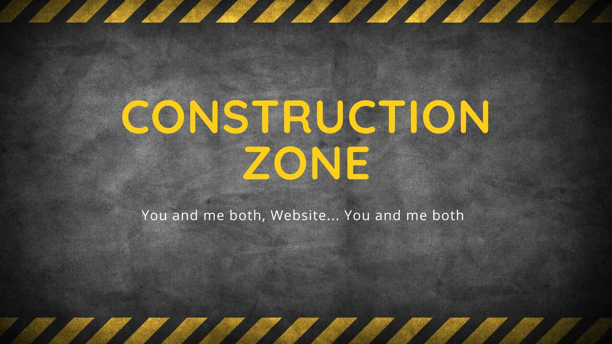
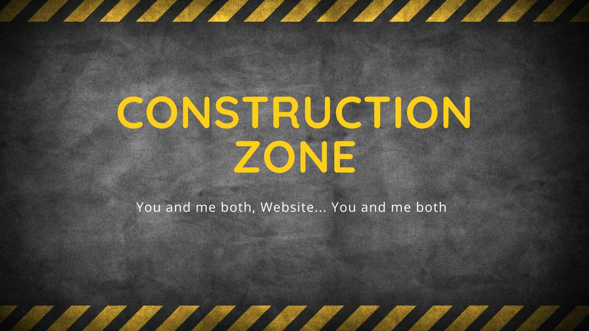

Not my real resume...
Look at the navigation above, it's changed. It's like a hidden door in a castle. You had to find it... Well done!
Look at the navigation above, it's changed. It's like a hidden door in a castle. You had to find it... Well done!
